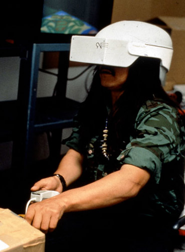

CODE DRIFT
A Conversation with Spirits Inside the Simulation of a Coast Salish Longhouse
Jackson 2Bears
Inherent Rights, Vision Rights:
I am entering Yuxweluptun's virtual reality simulation of a Coast Salish longhouse to have a conversation with the spirits... .
I am traversing a long pathway toward the open doors of the spirit lodge, and the sound of drums and hypnotic chanting escape from inside... far in the distance a coyote howls, drawing my attention upwards to the crescent moon hung high in the infinite void of the evening sky.
I am beginning to hallucinate... the surreal and synaesthetic experience of this virtual environment drawing me deeper into its irresistibly seductive digital dreamscape... I pass through the entrance of the lodge and I suddenly find myself a participant in a sacred ceremony, dancing and moving about in a frenzy to the dizzying sounds of powwow drums thundering and reverberating off the walls. I watch the smoke from the fire travel upwards and escape through an opening in the roof... and I begin to feel the piercing gaze of the many faces on the totem obelisks that stand against the caustic, bright-red walls of the room.
For the moment I am still aware that this is only an artificially produced trance enabled by my technological immersion in a computer-generated hologram... but this is an awareness of which I am becoming increasingly uncertain. Feeling the ground give way beneath my feet I begin to drift around the room... terrified, yet strangely calm, I have the uncanny sense that my body is disappearing... but at the same time I am hyper-aware of its fleshly presence.
Vanishing, and now almost invisible, I have the feeling that I have been possessed by some mystical and unnatural force... paralyzed by a momentary flash of panic, a crowd of indiscernible voices again fills the air and I am comforted and pacified by their spectral presence... and my urge to resist is subdued.
Then, suddenly, a cacophonous screech from the great eagle spirit causes the walls of the lodge to shudder... and I begin to feel nauseous as this ecstatic feeling of disembodied-embodiment awakens feelings in me of a kind of psychoexistential transformation that has about it the quality of some ancient initiation ritual. Confused and discombobulated, my entire sense of "self" has become distorted, dislocated and entirely uncertain... though this experience is definitely not of the transcendent nature. I don't have the feeling of leaving my body and the earthly plane... instead, I feel submerged in a kind of digital underworld, caught in a technologically enabled illusion, set adrift in a liminal zone with the feeling of being simultaneously inside and outside of my body....
The drumming intensifies and comes to a delirious crescendo, and I have now completely lost the ability to discern where one reality ends and the other begins... though this question has now altogether lost its importance and urgency... I close my eyes, and take a deep breath... and I finally allow myself to be fully taken into the technological abyss.

Inherent Rights, Vision Rights is the title of a virtual-reality artwork created by Coast Salish artist Lawrence Paul Yuxweluptun in 1991-93 at the Banff Centre for New Media, Banff, AB. It is an interactive work that, in its first iteration, consisted of a VR helmet and a joystick that immersed a single participant and enabled their navigation in a 3D recreation of a Coast Salish Longhouse. In the artwork the user is invited to explore a sacred ceremony, interacting with computer-generated figures derived from Yuxweluptun's paintings while submerged in a surreal and meditative (simulated) audio/visual environment. Here, the story is not "written on the land," but instead in ones and zeros in the liquid architecture of a computer-generated environment, a sacred space populated by spirit-simulations that inhabit the digital code.
Throughout his artistic career, Yuxweluptun has made numerous artworks that in a general sense engage with questions of Indigenous identity, freedom and self-government from a perspective deeply affected by an oppressive colonial hegemony. In his paintings (for which he is more popularly known) he has explored environmental, cultural, and sociological issues that are of concern to contemporary First Nations communities, particularly those in the West Coast. Often working on large-scale canvases, Yuxweluptun's visual imagery is often characterized by surreal landscapes populated with allegorically charged figures rendered in a mixture of different traditional and contemporary West Coast styles. In his work you can sense the artist's compassion and vehemence towards the devastation that colonialism and industrialization have had on Indigenous communities, and his resentment pours out in vibrant pigment in artworks such as Clear Cut to the Last Tree, Scorched Earth, and Redman Watching Whiteman trying to Fix Hole in the Sky.
Informing Yuxweluptun's work is his more than twenty years of experience as a "Blackface" dancer, having been initiated into the Sxwaixwe Coast Salish secret society at the age of fourteen. It was here that he was honored with the name Yuxweluptun, which translates as Man of Masks or Man of Many Masks. At the core of his art practice, one senses the artist's profound spiritual connection to his ancestral homelands, what some Indigenous philosophers have called a "psychology of place," or "a relationship with the natural world that could be called ensoulment... which for Native people represented the deepest level of psychological involvement with their land." [1] Ensoulment, generally speaking, entails maintaining a soulful, embodied and emotional connection with the natural environment, and is one way of describing how our ancestors viewed their connection with Mother Earth. Ensoulment is the belief "that the natural world is animate, that it generates powers to which humans can have access and that human use of the land is sanctioned by the appearance of spirits." [2] It is a core aspect of First Nations spirituality that is expressed, for example, in Coast Salish culture through the legend(s) of the Transformer (Xeel's) and his encounters with Kwu Yuweenulh Hwulmuhw (the first ancestors). Xeel's was a supernatural being who existed at the beginning of time and who traveled the earth turning animals and people into large stones, mountains or other elements of the natural environment. From these stories the Coast Salish people believe their ancestral landscapes to be sacred, and they cultivate a participatory and internalizing bond with "place" wherein the natural environment becomes something they share a close kinship with. [3]
For Yuxweluptun, creating a virtual reality project like Inherent Rights, Vision Rights was about bringing together traditional First Nations spirituality with Western world experiences and technologies. It is an artwork about "[e]mploying technology that in the past has been used against native people," [4] and then repurposing it as a means to explore critical issues about our "inherent right" to spiritual, cultural and social freedom. He writes:
In it, the longhouse is a given space in time which I use to show a religious concept, to physically bring people into contact with a native worshiping aspect of life, praying Indians.... What it is like being in a possessed state, feeling rhythmic sounds in a longhouse, feeling sounds go through oneself, feeling a spirit inside you. [5]
In an essay by Cree/Mtis theorist Loretta Todd entitled Aboriginal Narratives in Cyberspace, the author begins by posing a number of interesting questions that she afterwards reads through Yuxweluptun's Inherent Rights artwork: "What then does the territory called cyberspace [virtual reality] mean to Aboriginal people?" [6]; "Can our narratives, histories, languages and knowledge find meaning in cyberspace [simulated environments]?" [7]; and perhaps most importantly, "What if Aboriginal consciousness was fractalized, would cyberspace [virtuality/simulation] as articulated be part of our geometry of philosophy?" [8]
To begin, Todd argues that the invention of cyberspace/virtual reality is linked to three ideological perspectives that are uniquely Western, concepts not found within traditional Indigenous teachings. First, the "ontology of cyberspace" is inextricably linked to the notion of transcendence -- the "hell of western thought"[9] -- which she argues fixates on the limitations of the "body and the senses" with the idea of moving beyond the flesh to find solace in the virtual. Second, a special condition for the development of cyberspace and virtuality involves a direct and profound fear of the natural, a fear especially expounded by the rising anxiety about environmental conditions that we are witnessing. Third, Todd argues that the conditions for an "ontology of cyberspace" are derived from a combination of the Cartesian tendency to "separate the body from the mind," [10] and religious (Christian) cosmologies invested in the myth of salvation. She says,
A fear of the body, aversion to nature, a desire for salvation and transcendence of the earthly plane has created a need for cyberspace. The wealth of the land almost plundered, the air dense with waste. The water sick with poisons, there has to be somewhere else to go. [11]
In essence, what Todd calls a Western "ontology of virtuality" is an ideological perspective that emerged in the early days of cybernetic research (of which cyberspace/virtual reality is a subset). As N. Katherine Hayles argues in her text How We Became Post Human, from the birth of the field of cybernetics in the 1940s, scientists have focused on developing theories of communication between human agents and machines that were synonymous with Cartesian Dualism, "a conceptualization that sees information (mind) and materiality as distinct entities."[12]
Hayles thesis is comprised of four propositions. First, the construction of the posthuman, following the trends of early cybernetic researchers, has come to value "information" over "material instantiation,"; embodiment is devalued and erased as an essential feature of existence. Second, through a critical examination of scientists Hans Moravec and Norbert Wiener, she proposes that human consciousness was mistakenly equated with information processing machines; our conceptualization of the posthuman, which regards consciousness as a mere epiphenomenon, resulted from this mistake. Third, Hayles opposes the ideas of the early cybernetic researchers, who identified the body as the "first prosthesis," wherein the technological extension and replacement of the humanoid body became the focus of future scientific research. Fourth, Hayles objects to the configuration of the posthuman that ceases to recognise any specific difference between material embodiment and virtual/simulated reality. That is, after cybernetic researchers established the concepts of "information" over embodiment, consciousness as an epiphenomenon, and the body as a replaceable biological prosthetic, they envisioned a version of the posthuman that finally collapsed the boundaries between computer simulation and biological organisms. This is to say that the discourse of embodied physical presence in the context of virtuality is troubled by the contradiction of being both "inside" and "outside" the simulation simultaneously. This is what Loretta Todd meant when she spoke of the "fractalization" of consciousness, the pleasurable and seductive illusion of disembodied subjectivity "dispersed throughout the cybernetic circuit," and the disappearance of the body as the realization of Hans Moravec's apocalyptic prophecy of a post-biological future; she says that "if poetry requires the willing suspension of disbelief, then virtual reality/cyberspace requires the willing suspension of the flesh." [13]
But in Yuxweluptun's artwork Inherent Rights, Vision Rights, Todd experiences something quite different, and so she writes about a reversal of the usual modes of simulated experience and virtual hallucination. Rather than a feeling of distributed subjectivity and the transformation of the self into streams of data under the sign of technological-transcendence, in Yuxweluptun's work, for Todd, there is a return to the flesh in something similar to what N. Katherine Hayles would call "embodied virtuality" -- virtuality, that is, in which the myth of transcendence and disembodied immortality is demystified, and embodiment and material embeddeness are written back into our concept of posthuman subjectivity. What follows is an examination of the kinds of reversals, multiplicities and paradoxes that exist within Yuxweluptun's work. Following Todd, I will argue that Inherent Rights, Vision Rights presents us with the possibility of recontextualizing the Western "ontology of the virtual," a transformation in which the focus becomes a return to the flesh as both an embodied and simulated experience under the sign of an Indigenous Theory of Virtuality.
In our culture you do not have all these fibre optic things and it is quite an interesting mask that virtual reality has produced. I come from a tradition that was passed down in the West Coast. At age fourteen, I was given a mask and it had responsibilities that go with the culture. As the carriers of the mask, we took responsibility for all the peoples who were in this room to dance. [14]
In an essay entitled Inherent Rights, Vision Rights that accompanied the piece, Lawrence Paul Yuxweluptun reflected on his experience creating a virtual reality artwork and speaks to the use of technology as a means to express Native "modernalities" -- a neologism that references the intersection and hybridization of Western and Indigenous technology and aesthetics. At one point in the text he refers to the head-mounted computer display in the first incarnation of the piece as "a whiteman's mask," [15] a symbolic object about repurposing technology through the inversion of the dominant codes of a Western "ontology of virtual reality" -- a mask, therefore, as a technology of immersion that transports the participant into the simulation of a Coast Salish longhouse, an Indigenous space of worship and prayer where spirit-simulations begin to haunt the digital code. "I think this first mask will end up in museums just like other masks!" he says, "Very primitive, with numbers on them, and the date they were made." [16]

Masks in Indigenous cultures traditionally served myriad functions and were associated with a number of social activities, ceremonies and sacred rituals. In First Nations culture, masks were never seen as mere objects and were taken to be numinous as they were often associated with healing ceremonies in which they acted as a conduit to the realm of the spirits. In my culture (Haudenosaunee or Iroquois) the most important masks were those of the False Faces, which were only worn by members of the Society of Faces (False Face Society), inclusion and initiation into which depended on an individual being instructed to construct such a mask in a dream. [17] False Face Masks were always carved into a living tree with which the individual shared a spiritual connection. Although no two masks were identical, they were recognizable for the unique characteristic of a broken and crooked nose fashioned in the likeness of the one we call Flint, or the Great World Rim Dweller. [18] The False Face masks were thought to be alive, possessing the spiritual essence of Flint, and were used in healing ceremonies to enable the conjuration of his spirit and request his aid. Our False Face masks were sacred artifacts, ancient technologies through which the spiritual realm may be accessed and drawn upon for the purpose of healing or guidance. [19]
The Coast Salish people traditionally made only one type of ceremonial mask, the Sxwaixwe, which only a limited number of families, like Yuxweluptun's, have hereditary rights to. Like the False Face masks, the Sxwaixwe were thought of as possessing supernatural properties, bestowing on their owners different healing powers that made him/her capable of curing certain diseases. [20] The Sxwaixwe mask is dichotomous -- not only was it able to cure, it was also known to cause illness, create earthquakes, storms and floods. Indeed, the power of the mask is thought to come from its contradictory nature, represented in its aesthetic appearance through a combination of opposites. Surrounded by a flat disk upon which sits two birds is a stylized human-like face characterized by protruding eyes, a bird shaped beak and a fish-like tongue. The bird-fish hybrid represents the merging of the sky and the sea, the aerial and aquatic realms, and thus it becomes a symbol of mediation between distant, conflicting and contradictory elements -- night and day, death and life. [21] Considering these masking traditions in Indigenous culture, what can we say about the head-mounted computer display ("the whiteman's mask") in Yuxweluptun's Inherent Rights artwork? Can we take it to be simply a technological apparatus, a glorified computer screen that functions only to produce sensorial hallucinations, or is it something more? Conceived of as a mask in the Indigenous context, could we attribute to it a numinous quality so that it becomes more than just an object of technological fascination and instead, like a False Face mask, acts as a conduit to another realm in which the digital code becomes the medium through which spirit-simulations begin to speak? Or can we think about Yuxweluptun's VR helmet as being analogous to the Sxwaixwe mask, a spiritual mediator between the incommensurable, death and life, embodiment and disembodiment, virtuality and flesh? That is, considered as a reversal of the codes of simulation, can technology here become hauntological, where dreams and visions are synonymous with that of technological immersion at the site of the collapse between the boundaries of the virtual and biological organisms?
Martin Heidegger once remarked that what was truly uncanny was not the fate of humankind to become increasingly more technological, but rather our complete unpreparedness for this imminent transformation -- the impossibility that is, for humankind to really understand our own technological destiny. For Heidegger, the reason for this was that the "essence of technology" was in fact not technological, but instead one of being -- a mode of human existence. [22] Therefore, what Heidegger called the "mystery of technology" could never be understood technologically: while its manifest content was represented by the technical enframing of existence, the latent content of technology would always remain undefined and enigmatic to human understanding. Heidegger's meditations that followed on the question of technology considered not only its positive potential but also the dark side of technicity -- the possibility of the technological to increasingly de-humanize society and arrive fatefully at what he called the "darkening of the world," in which the technological comes to transform the way we think and will.
If we follow Heidegger we might (unexpectedly perhaps) turn to the psychoanalytic writings of Carl Jung as a way to begin to think technology as a mode of human consciousness. To this end, we might imagine the hidden (latent) side of the technological, that which always remains concealed beneath the surface and inaccessible to human thought. Even though his mind was not specifically directed to the question of technology when writing his theories of dreams and the unconscious, re-reading Jung today, against the backdrop of our technological present, one comes to a deeper understanding of the far reaching consequences of Heidegger's theorization -- that technology is, as Arthur Kroker has said, "not an object which we can hold outside ourselves, but technique as us, as a grisly sign of the possession of body and mind." [23]
In the text Man and his Symbols, Carl Jung proposed that the tendency of contemporary society to over-emphasize rational/scientific modes of thinking had resulted in the fatal rupture of the "parallel" correlation of the unconscious and conscious realms of the psyche in the modern individual. This rupture was fatal because Jung believed that if these psychic realms were "split apart or disassociated" catastrophic psychological disturbance would follow. In his time Jung saw an individual haunted by the "implosion" or "turning in of the psyche," a troubling predicament in which the individual had placed itself at the mercy of the "psychic underworld," having lost his/her ability to consider "numinous symbols and ideas." [24] It is for this reason that Jung frequently chose to meditate on Indigenous (pre-modern in his own words) cultures, which in his estimation had maintained psychic balance despite comparable scientific/technological advance in their time. Jung's conclusion was that pre-modern cultures forged and maintained a deep "spiritual" connection with their dreams which was reflected in their cosmology, philosophy, science and technology; by contrast, modern Western society had "forgotten the age-old fact that [spirits] speak through dreams and visions." [25] When considering the question of technology, Jung concluded it to be wholly ephemeral and transcendent, symbolizing the erosion of the unconscious to a dangerous degree because it had become nihilistic and representative of a radical denial of embodied (lived) existence within the natural world. As science and technology have advanced, he argued, our world has increasingly become dehumanized because we have lost our emotional and "unconscious identity" with nature: [26]
How different was the former image of matter -- the Great Mother -- that could encompass the profound emotional meaning of Mother Earth. [Today] it has degenerated to the limited ego-thoughts of man... and vanishes into the sand of an intellectual desert. [27]
In his research Jung discovered that dreams in "pre-modern" cultures were believed to be a conduit to the realm of the spirits and that accompanying this belief were complex methods of "dream interpretation" that in many ways were superior to those of modern psychology. Jung further proposed that a culture in which dreams and visions were a primary source for informing spiritual knowledge necessarily maintained a "psychic disposition" rooted in the ideal of "mystical participation," otherwise known as animism. For instance Jung argued that in the current age of Western science the concept of matter had become an entirely intellectual concept, an inhuman and purely abstract idea devoid of any "psychic significance." [28] By contrast, Indigenous cultures were "aware of these psychic properties [of nature, and they] endow animals, plants or stones with powers that we find strange and unacceptable." [29]
The concept of animism is one that is used by a number of contemporary Indigenous philosophers as a means of communicating Onkwehonwea (an Indigenous way of being), which consists of the idea that everything in the natural world -- not just humans, but also animals, plants, insects, mountains, rivers and all of the natural landscape -- is alive and filled with "spirit". [30] In his text Native Science, Tewa philosopher Gregory Cajete, like Jung, argues that ensoulment and a "psychology of place" is an inclusionary philosophy at the root of Indigenous spirituality, noting that in our traditional societies we had rituals that paid homage to the living spirit of the sky (Atonwa ne' Karonya), the rivers (Atonwa ne kahyonhowanen), and the mountains (Atonwa ne' Ononta). In brief, in traditional Indigenous cultures, people believed in an all-embracing "society of life" in which living creatures as well as natural phenomena were united and possess spirit, implying the existence of a mutual (equal) relationship between man, animals and nature. [31] As Cajete notes, in this belief system,
Everything is viewed as having energy and its own unique intelligence and creative process, not only obviously animate entities, such as plants, animals, and microorganisms, but also rocks, mountains, rivers, and places large and small... this is the Indigenous view of "animism". [32]
If the concept of animism, then, is taken to be a central feature of Indigenous spirituality in which everything in the universe including seemingly inanimate objects are thought to be alive and possess "spirit," then it follows that the same must be said about technology. That is to say, an Indigenous theory of virtuality would be about thinking technology animistically -- computer simulations come alive and begin to have for us what Jung referred to as a "psychic significance." Here, the technological does not become about what Jung foresaw as a radical denial of existence and the natural world, but rather simulations that return to embed themselves back into the material instantiation of the flesh and reinscribe an emotional and unconscious identity with biological organisms, spirits and other natural phenomenon. In Yuxweluptun's virtual reality artwork Inherent Rights Vision Rights the people who experience the work are not mere spectators but participants in the phenomenological hallucination of a sacred ritual -- they are users with agency who exercise free will while navigating a simulation of a Coast Salish longhouse. And here the participant enters into another kind of relationship, a relationship in which they become interconnected with the virtual, caught in a feedback loop in which Yuxweluptun's spirit-simulations move through the digital code and interface with the flesh. If we are to think virtual reality animistically in the context of Inherent Rights, Vision Rights -- where streams of information code penetrate epidermal surfaces and the digital sounds of sacred drums, the crackling of a virtual fire and masked avatars open a gateway through which spirit-simulations are allowed to pass -- then we are not talking about technological-transcendence, but rather about interconnected ontologies with the virtual in what Jung described as a co-existing "psychic experience," a shared "unconscious identity...." [33] Jung says,
[In Indigenous cultures] the soul (or psyche) is not thought to be a distinct unit... Many assume that a man has a bush soul as well as his own, and that the bush soul is incarnate in a wild animal or tree, with which the human shares some kind of psychic identity. [34]
In the chapter "1730: Becoming-Intense, Becoming-Animal..." in their book A Thousand Plateaus, Deleuze and Guattari begin their thesis on transformation with a reflection on the works of Carl Jung. To begin let us remember that Jungian psychology holds that there is a three-tiered order of psychic realities: individual consciousness, the individual unconscious, and the collective unconscious. Here we are concerned with the third order, comprised of what Freud called "psychic remnants" and what Jung called "primordial images" or the "archetypal" series. Jung conceived the collective unconscious as being universal; just as the body is genetically encoded and inherits physical traits that are common to our species, so too the psyche is imprinted with "collective experiences" and layered with clusters of symbolic information. Or as Jung puts it, "Just as the human body represents a whole museum of organs, each with a long evolutionary history behind it, so we should expect to find that the mind is organized in a similar way.... [The mind] can no more be a product without history than is the body in which it exists." [35]
What Deleuze and Guattari draw from the Jungian perspective is the notion that the archetypal series in the collective unconscious need not be exclusively human in nature, but could also be of the plant or animal variety. From here Deleuze and Guattari propose that the individual is opened to all kinds of becomings with different elements in this series and can experience interconnected ontologies with different animal, or plant, archetypes. From Jung's work Deleuze and Guattari seek to bypass what had previously been a structural and symbolic ordering of the unconscious as a "correspondence of relations" between archetypes. Instead, Deleuze and Guattari prefer the notion of becoming, which entails not a correspondence but rather an interlinking, a "line of flight" that does not consist merely of "playing" (imitating, resembling), but something more akin to the Jungian notion of "psychic co-existence." For instance, a becoming-animal operates in-between terms, it is a "verb with a consistency all its own; it does not reduce to, or lead back to, 'appearing', 'being', 'equaling', or 'producing'." [36] Becomings are not fixed states of existence, but instead are fluid transformations that imply something less differentiated. Moreover, the kinds of becomings we find that follow in Deleuze and Guattari's text do not exclusively occur between organic types (becoming-wolf, becoming-crab, becoming-horse) but also, taking the cue from Jung, occur between the biological and the non-biological (becoming-machine, becoming-sonorous, becoming-territorial). Here, becomings are about the formation of an assemblage with machines (technology, simulation, virtuality), which entails an interlinking of elements in a rhizomatic multiplicity. Beyond shared psychic-experiences between organic archetypes, and speaking within the context of thinking technology animistically, becomings can (and necessarily do) also occur between the organic and the technological, the biological and simulation. Moreover, in the context of Yuxweluptun's Inherent Rights, Vision Rights we might here propose the possibility of interconnected ontologies with non-living entities (becoming-ghost, becoming-phantom, becoming-undead), which entails the becoming-spectral of technology under the sign of virtual-phantomality.
What I mean by technology becoming-spectral and virtual-phantomality is taken here in the Derridian sense, and follows from the mythology of the Sxwaixwe. With regard to Hayles' fourth thesis, the collapse of the distinctions between computer simulation and biological organisms need not, necessarily, lead to the complete erasure of embodiment. Instead, like with the Sxwaixwe mask in Yuxweluptun's work, the VR helmet becomes a mediator between two seemingly incompatible realms -- the human psyche and the technological circuit, pattern (code) and presence (body), biological organism and computer simulations. In this way Inherent Rights, Vision Rights is a reversal of Hayles' thesis; instead of trying to reestablish the boundaries between simulation and biological organism this is an artwork that operates within the contradiction of the collapse. Here, the "whiteman's mask" in Yuxweluptun's artwork, like the Sxwaixwe, functions as a binding of opposites, and like the Derridian notion of the specter, operates in-between binary distinctions -- death and life, simulation and the real. Here the postmodern subject is considered to be neither simulation nor flesh, embodied nor disembodied, "information" nor material "instantiation," and simultaneously all of these at once.
On the one hand the VR helmet acts as a technological prosthetic, and on the other hand it produces a technological hallucination in which simulations are simultaneously re-embodied in the subject attached to the device, interlinking and (following Deleuze and Guattari) forming an assemblage with the human sensorium. "Yuxweluptun does not want you to forget your body," [37] writes Todd, who in the artwork glimpses an alternate concept of the virtual, one that is "derived from storytelling and oral tradition" [38] in a way that "reflect[s] our interconnectedness" and which therefore unhinges this virtual reality from being "anchored to re-enactments of western cultural consciousness." [39]
Consider for a moment Donna Haraway, an author who re-envisioned Western narratives of humanism and technology as an interdependent matrix of machines and flesh under the sign of the cyborg. To read Donna Haraway's essay A Cyborg Manifesto is to enter into a world in which the distinctions between technology and biological organisms are completely dissolved, where bodies and machines become interconnected to such a degree that it becomes impossible to tell where one begins and the other ends. To begin we could think of the cyborg (a term coined by Manfred Clynes and Nathan Kline in the 1960s) to be the ultimate dream of the cybernetic researchers that were the focus of N. Katherine Hayles critique described earlier; the cyborg is emblematic of all the narratives: "Escape from the earth, from the body, from the limits of merely biological evolution...." [40] In this way the Cyborgian man-machine hybrid is understood as the quintessential techno-humanist challenge, a new species formed through the symbiosis of flesh and machine, the first step in the evolutionary game-plan towards a post-biological future.
However for Haraway the cyborg is not our future, but rather our present. The hybrid creature of industrial production, science fiction, and cybernetic research counts today for our lived experience -- it is our posthuman ontology. In regards to the myth of the cyborg, Haraway sees the line between material reality and science fiction to itself be fictional (an "optical illusion"), the coupling of machine and organism (becoming-machine) being evident everywhere today in modern medicine, biology, sexuality, politics and lived social relations: "By the late twentieth century, our time, a mythic time, we are all chimeras, theorized and fabricated hybrids of machine and organism." [41]
The difference is that for Haraway the cyborg presents some interesting theoretical possibilities. Rather than attempt to reestablish the boundaries that once kept bodies and machines separate, she begins to write an alternate mythology from within the contradictions that the cyborgian hybrid produces. For Haraway the cyborg becomes a means to subvert the kinds of dualisms that exist in Western traditions, binary opposites (self/other, mind/body, male/female, truth/illusion) that in the past upheld "hierarchical dominations" and that in the present enable networks of power under the sign of the "informatics of domination." For Haraway the cyborg transgresses these problematic constructions precisely through its partial, ironic and contradictory nature -- like the Coast Salish Sxwaixwe mask, the cyborg is a mediator in the binding of opposites.
The cyborg disturbs the notion of continuity in its breaching of the boundaries between organism and machine and becomes a symbol for the ironic pleasures found in the collapse of binary distinctions. It stands for the power and the potential for those not afraid of symbiotic kinships, psychic-assemblages and ontological interlinkings with technology (what Deleuze and Guattari call becoming and what Jung called shared psychic experiences). The cyborg breaks with the understanding of the individual as a synthesized unit separate and distinct from the technologies and the environment in which it is immersed. And yet while the cyborg here originates from within techno-humanist logic, it simultaneously avoids narratives of disembodiment -- it exists "outside salvation history." [42] Instead it operates from within the collapse between machinic and biological organisms, precisely where the distinction between humans and machines, consciousness and computer simulations, is transgressed -- the cyborg is not a symbol for technological-transcendence, but is rather the becoming-spectral of virtuality. The cyborg, like the Sxwaixwe mask, is about the merger of partial and contradictory identities (the bird-fish or the human-machine hybrid) and therefore necessarily entails an "oppositional consciousness," becoming the enigmatic sign of the postmodern subject who is neither flesh nor code, real nor simulation, and all of these at once.
Like the Transformer in Coast Salish legend, Inherent Rights, Vision Rights is an artwork that operates in-between binary distinctions -- changing simulations into flesh like Xeel's turned bodies into stone, and changing virtual environments into sacred landscapes like transforming "the first ancestors" into mountains, trees and rivers. It is not an artwork that affirms notions of technological-transcendence, but rather a work about engaging in shared, co-existing ontologies with the virtual in which the digital code becomes a medium for spirit-possession through the becoming-hauntological of virtuality. Here, the VR helmet, like the Sxwaixwe mask, is an interface, but this time not a conduit to the spirit world of our ancestors but a technology that places the body in a feedback loop with the virtual -- forming assemblages, multiplicities, rhizomatic networks and co-existing ontologies. Inside Yuxweluptun's simulation of a Coast Salish Longhouse a new participatory, embodied and internalizing bond is made in which the virtual is haunted by spirit-simulations and virtual-phantoms that emerge from within the enfolding of paradoxical components and the merging of opposites.
As Yuxweluptun writes in the accompanying text for the artwork, the piece was intended to bring participants into contact with a Native form of worship, being inside the meditative space of the longhouse, what it is like to have a "spirit inside you." Here, the VR helmet, reconceptualized in the context of Indigenous masking traditions, becomes an interface of immersive possibility which does not perform (to use the Jungian term) a nihilistic and transcendent function, but in which spirit-simulations become embodied and the hauntology of virtual-phantomality becomes a sacred ceremonial act. Inherent Rights, Vision Rights shows us a new concept of the virtual, one that does not rehearse the usual codes of disembodied immortality, and one in which our narratives and stories as Indigenous people find new meaning -- where ensoulment and an internalizing bond is formed, where an Indigenous "psychology of place" becomes also a "psychology of virtuality."
With the reversal of the codes of simulation, the "ontology of virtual reality" in Yuxweluptun's work becomes about the return to the flesh as both an embodied and virtual experience, in what might be the first experiment with the concept of an Indigenous Theory of Virtuality. The virtual, that is, envisioned as the recombinant inversion of the codes of simulated-bodies and telepresent flesh ("mechanical and separate" [43]), and seeing technology now through a binding of opposites in the tradition of the Sxwaixwe and from the perspective of Native cosmology ("connected and immanent" [44]). And like the False Face and Sxwaixwe masks, in Inherent Rights, Vision Rights, technology becomes-spectral where the digital code becomes the medium through which Yuxweluptun's spirit-simulations begin to speak, expressing Onkwehonwa (a Native way of being) inside the simulation of a Coast Salish Longhouse, a sacred space of dance, worship, prayer and healing.
Notes
------------
[1] Gregory Cajete, Native Science: Natural Laws of Interdependence (Santa FE, New Mexico: Clear Light Publishers, 2000), 186.
[2] Lawrence Paul (Yuxweluptun), "Inherent Rights, Vision Rights", Immersed in Technology: Art and Virtual Environments, ed. Marry Anne Moser (Cambridge, Massachusetts and London, England: The MIT Press, 1996), 316
[3] Franz Boas, Indian Myths and Legends from the North Pacific Coast of America (Vancouver: Talon Books, 1916), 161.
[4] Paul (Yuxweluptun), 316.
[5] Ibid
[6] Loretta Todd, "Indians in Cyberspace", Transference, Tradition, Technology, ed. Dana Claxton and Steven Loft (Banff, Alberta: Walter Phillips Gallery Editions, 2006), 153.
[7] Ibid
[8] Ibid
[9] Ibid, 155.
[10] Ibid
[11] Ibid
[12] N. Katherine Hayles, How We Became Posthuman (Chicago and London: The University of Chicago Press, 1999), 12.
[13] Todd, 160.
[14] Lawrence Paul (Yuxweluptun), "Open Discussion -- day two", Virtual Seminar on the Bioapparatus, ed. Catherine Richards and Nell Tenhaaf (Banff, Alberta: Walter Phillips Gallery Editions, 1991), 110-111.
[15] Paul (Yuxweluptun), 316.
[16] Ibid, 317.
[17] Lewis Morgan, League of the Ho-De'-No-Sau-Nee Or Iroquois (Cambridge: UP. John Wilson and Son, 1904), 220.
[18] Ibid
[19] Ibid
[20] Ino Rossi, The Logic of Culture: Advances in Structural Theory and Methods (New York: J.F. Bergin Publishers, 1982), 157-160
[21] Ibid
[22] Martin Heidegger, The Question Concerning Technology and Other Essays, translated and with an introduction by William Lovitt (New York: Harper and Row, 1977), 109.
[23] Arthur Kroker, The Possessed Individual (Montreal: New World Perspectives, 1992), 13.
[24] Carl Jung, Man and His Symbols (New York: Dell Publishing CO, 1964), 84.
[25] Ibid, 92.
[26] Ibid, 7.
[27] Ibid, 85.
[28] Ibid, 84.
[29] Ibid, 30.
[30] Cajete, 186.
[31] Elisabeth Tooker, An Iroquois Source Book Vol. 3: Medicine Society Rituals (New York & London: Garland Publishing, Inc, 1985), 172.
[32] Cajete, 21.
[33] Jung, 7.
[34] Ibid, 8.
[35] Ibid 57.
[36] Gilles Deleuze and Felix Guattari, A Thousand Plateaus: Capitalism and Schizophrenia (Minneapolis: University of Minnesota Press, 1987), 239
[37] Todd, 160.
[38] Ibid, 161.
[39] Ibid, 162.
[40] Haraway, 149.
[41] Ibid, 8.
[42] Ibid, 150
[43] Todd, 160.
[44] Ibid
----------------
Jackson 2Bears is a Kanien?kehaka (Mohawk) multimedia artist and Ph.D. candidate at the University of Victoria. His artwork has been exhibited in solo and group exhibitions across Canada, most recently at: EM-Media (Calgary, AB), the Vancouver Art Gallery, Interaccess (Toronto, ON), SAW (Ottawa, ON), and the North American Indigenous Games (Cowichan, BC) He has also exhibited internationally in media arts festivals and group exhibitions such as Digital Art Weeks (Zurich, Switzerland), Syncritism (Savannah, GA) and Altered States (Plymouth, UK). He was recently named the recipient of a Victor Martyn Lynch-Staunton Award from the Canada Council for the Arts. jackson2bears.net